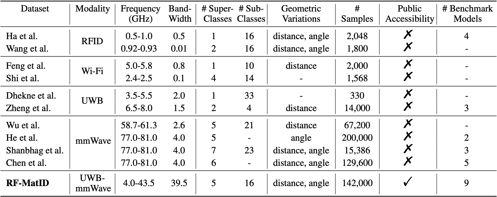
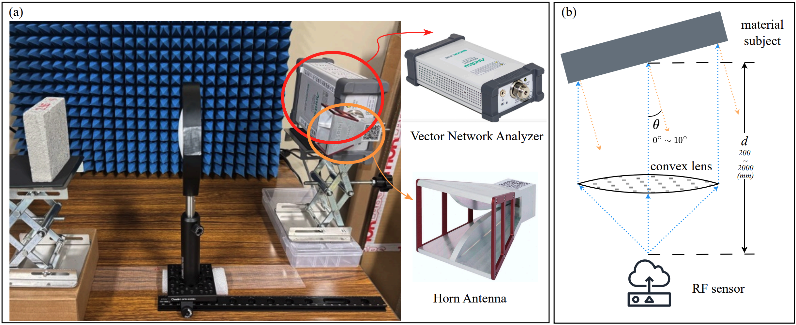
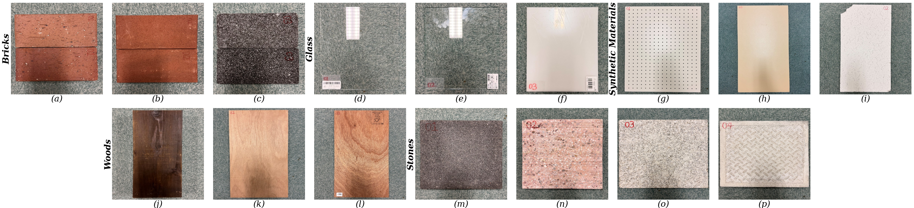
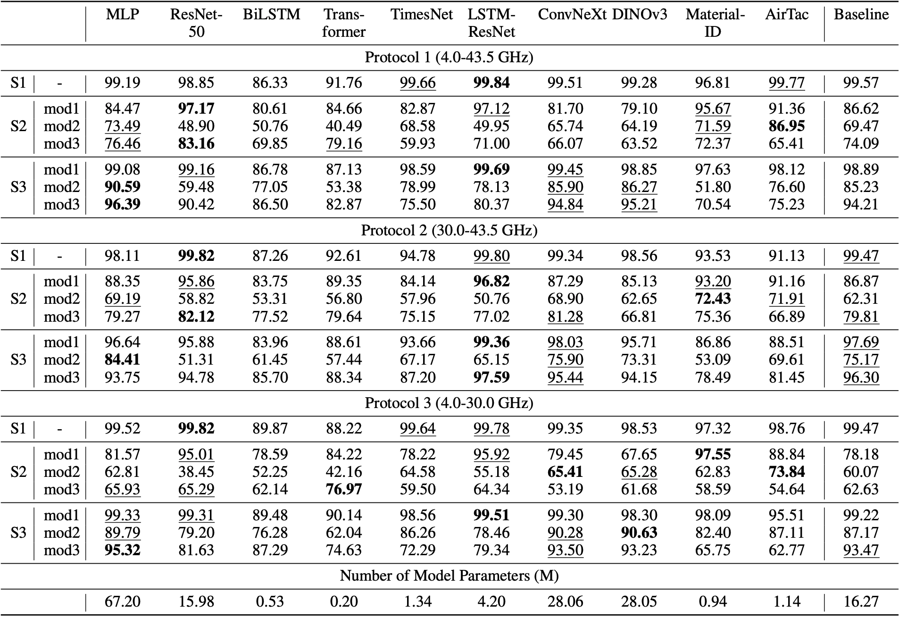
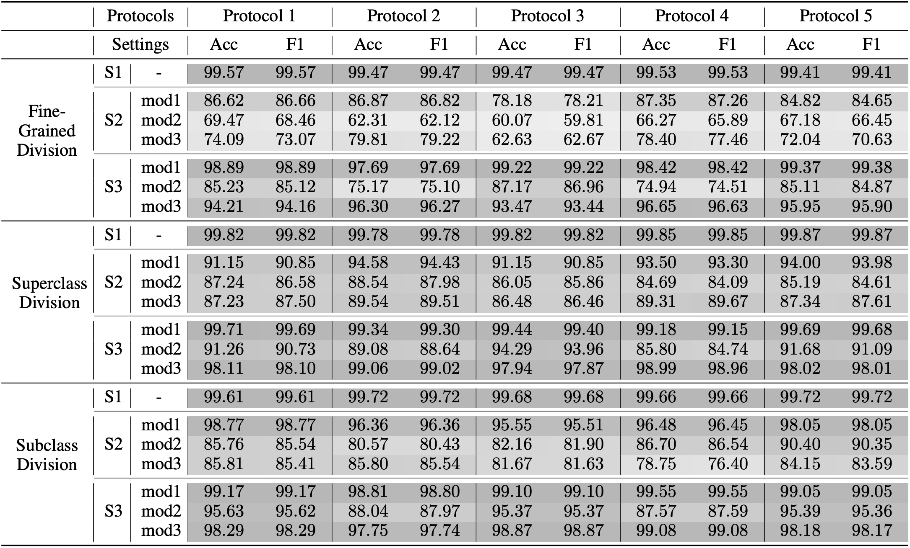

Visualization of the frequency-domain RF data of the 5 selected materials.
Accurate material identification plays a crucial role in embodied AI systems, enabling a wide range of applications. However, current vision-based solutions are limited by the inherent constraints of optical sensors, while radio-frequency (RF) approaches, which can reveal intrinsic material properties, have received growing attention. Despite this progress, RF-based material identification remains hindered by the lack of large-scale public datasets and the limited benchmarking of learning-based approaches. In this work, we present RF-MatID, the first open-source, large-scale, wide-band, and geometry-diverse RF dataset for fine-grained material identification. RF-MatID includes 16 fine-grained categories grouped into 5 superclasses, spanning a broad frequency range from 4 to 43.5 GHz, and comprises 142k samples in both frequency- and time-domain representations. The dataset systematically incorporates controlled geometry perturbations, including variations in incidence angle and stand-off distance. We further establish a multi-setting, multi-protocol benchmark by evaluating state-of-the-art deep learning models, assessing both in-distribution performance and out-of-distribution robustness under cross-angle and cross-distance shifts. The 5 frequency-allocation protocols enable systematic frequency- and region-level analysis, thereby facilitating real-world deployment. RF-MatID aims to enable reproducible research, accelerate algorithmic advancement, foster cross-domain robustness, and support the development of real-world applications in RF-based material identification.
Traditional material identification mainly uses cameras and hyperspectral sensors. While effective for surface textures, these methods are limited by lighting conditions and the visual similarity of different materials. Most importantly, optical sensors cannot reveal intrinsic physical properties like conductivity, highlighting the need for alternative sensing modalities.
To address these gaps, non-visual modalities like Radio Frequency (RF) are gaining traction. By leveraging electromagnetic interactions, RF reveals intrinsic material properties that go beyond surface appearance. However, the field currently faces three major hurdles: a lack of large-scale open datasets, fragmented frequency coverage in commercial sensors, and insufficient testing against real-world variables like distance and angles. Bridging these gaps is essential for moving RF sensing from controlled labs to robust, scalable deployments.
To bridge these gaps, we present RF-MatID: the first open-source, large-scale, wide-band, and geometry-diverse RF dataset specifically designed for fine-grained material identification. Spanning a broad 4 to 43.5 GHz spectrum, the dataset provides 142,000 samples represented in both the frequency and time domains (71,000 samples in each) across 15 material categories, systematically capturing the subtle variations needed to train robust Physical AI algorithms. RF-MatID also provides 5 frequency protocols (including protocols compliant with legal frequency regulations in major global economies) and 7 split settings for a comprehensive benchmark.

To facilitate the data acquisition of our RF-MatID, we develop a customized RF data collection platform. The system has a sensing range of ~2 m and a beam footprint of 1-5 cm which are intentionally tailored for indoor robot manipulation tasks in embodied AI that require high-precision, close-range perception.

RF-MatID encompasses 16 fine-grained material categories organized into five superclasses. The fine-grained material categories include: for bricks, (a) overfired clay brick, (b) lightweight perforated brick, (c) lava brick; for glass, (d) transparent acrylic glass, (e) tempered glass, (f) white opaque acrylic glass; for synthetic materials, (g) melamine-faced chipboard, (h) mineral fiber board, (i) solid polyvinyl chloride sheet; for woods, (j) cedar sleeper, (k) luan plywood, (l) red oak plywood; and for stones, (m) permeable paving Stone, (n) agglomerated stone, (o) granite, (p) concrete.

Considering the sequential dependencies across frequency bins as well as the spatial features along the frequency and channel dimensions, we benchmark a diverse set of models commonly used in computer vision, natural language processing, time-series, and RF-sensing research. We also introduce a simple yet robust baseline model that leverages frequency-aware positional encoding to preserve global consistency. Parallel extractors independently capture spatial and temporal features, which are then integrated into class probabilities via an MLP fusion module.

To construct a comprehensive baseline, we evaluate the baseline model across all three category divisions, seven split settings, and five protocols.

@article{chen2026rf,
title={RF-MatID: Dataset and Benchmark for Radio Frequency Material Identification},
author={Chen, Xinyan and Li, Qinchun and Ma, Ruiqin and Bai, Jiaqi and Yi, Li and Yang, Jianfei},
journal={arXiv preprint arXiv:2601.20377},
year={2026}
}